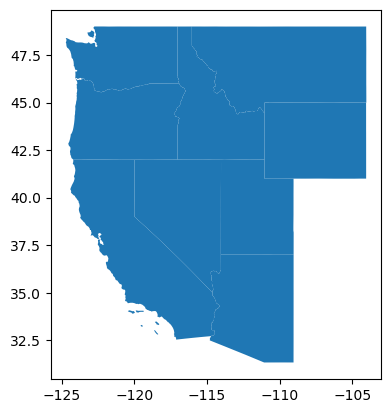
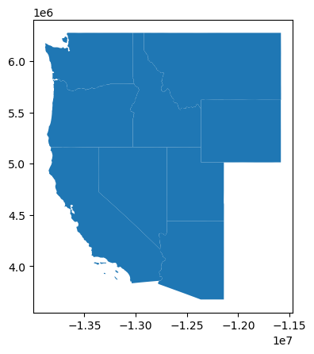
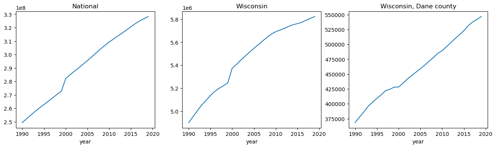
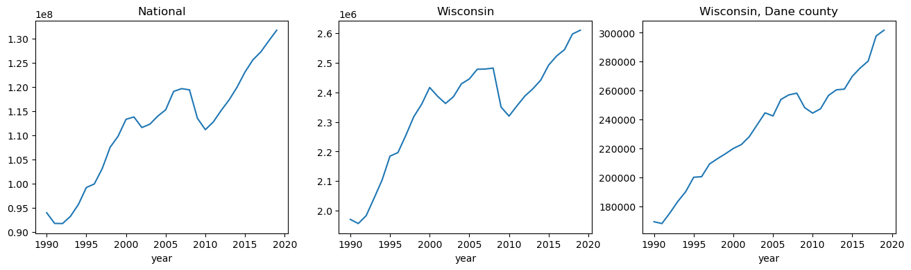

In this module we download, process and store geographic shapes, population and employment data from US Census Bureau.
Geography
We need state and county FIPS codes and names, and their shapes for map visualizations. Here we use 2018 Cartographic Boundary Files - simplified representations of selected geographic areas from the Census Bureau’s MAF/TIGER geographic database. These boundary files are specifically designed for small scale thematic mapping.
Function geo() downloads state and county 1:20,000,000 shapefiles using geopandas library, reshapes and combines them into single a GeoDataFrame. We use county code "000" as indicator of state rows. Resulting dataframe is cached on disk as a binary pickle file, and when subsequent calls of geo() will simply read and return the dataframe from cache to save time and avoid work. Delete data/geo.pkl if you want to re-create the dataframe, for example, after you changed the function. Similarly, download_file() also caches files on disk.
This is the top of the dataframe.
Code
geo().head()
st
cty
name
geometry
0
01
000
Alabama
POLYGON ((-88.46866 31.89386, -88.46866 31.933...
1
01
001
Autauga county, Alabama
POLYGON ((-86.91759 32.66417, -86.71339 32.661...
2
01
003
Baldwin county, Alabama
POLYGON ((-88.02632 30.75336, -87.94455 30.827...
3
01
005
Barbour county, Alabama
POLYGON ((-85.73573 31.62449, -85.66565 31.786...
4
01
007
Bibb county, Alabama
POLYGON ((-87.42194 33.00338, -87.31854 33.006...
geopandas stores shapes as shapely polygons in the geometry column. You can perform various geometric operations with these objects, refer to geopandas and shapely documentation. For example, let’s select and plot all states that cross the band between -120 and -110 degrees of longitude, roughly US Pacific coast.
Code
d = geo().cx[-120:-110, :].query('cty == "000"')d.plot();

Be mindful of Coordinate Reference System (CRS) when working with shapefiles. If you combine shapefiles from multiple sources, make sure to align their CRS’s. Census shapefiles come in EPSG:4269. The same map in “Spherical Mercator” (EPSG:3857, used in Google Maps) will look like this.
Code
d.to_crs(epsg=3857).plot();

Population
We are using annual state and county population 1990-2019 from Census Population Estimates Program (PEP). Data are available in 10 year blocks for 2010-2019, 2000-2010 and 1990-1999.
Note on character encoding of plain text files, including CSV: newer files use "UTF-8", older use "ISO-8859-1".
Post-2000 files are simple CSV tables. Functions pop_2010_2019() and pop_2000_2009() download and read them into dataframes with minor manipulation.
1990-1999 data are in a long text file. pop_1990_1999() does some more elaborate parsing. Table with state and county population has "1" as the first character in every line. We use this to read necessary lines into a temporary string buffer, and then parse the buffer into a dataframe.
Finally, in pop() we call the three above functions to create three frames, combine them and add aggregated rows of national totals with state code "00" and county code "000". We also compute year-to-year growth rate in percentage points in column pop_gr. Final dataframe is pickled for easy access.
Code
pop().head()
st
cty
year
pop
pop_gr
0
00
000
1990
249470539
NaN
1
00
000
1991
252208537
1.097524
2
00
000
1992
255104027
1.148054
3
00
000
1993
257857622
1.079401
4
00
000
1994
260401091
0.986385
Quick visual inspection of the data reveals an abnormal population jump between 1999 and 2000. It is clear on national and state level, but not so on county level. I could not find out the cause, but it is most likely a data artifact. This is something to be aware of, but it does not matter for the purposes of this project.
Code
d = pop().set_index('year')fig, ax = plt.subplots(1, 3, figsize=(16, 4))d.query('st == "00" and cty == "000"')['pop'].plot(ax=ax[0])ax[0].set_title('National')d.query('st == "55" and cty == "000"')['pop'].plot(ax=ax[1])ax[1].set_title('Wisconsin')d.query('st == "55" and cty == "025"')['pop'].plot(ax=ax[2])ax[2].set_title('Wisconsin, Dane county');

Employment
State and county employment comes from Census Business Dynamics Statistics (BDS). This product has some improvements over more widely used County Business Patterns, and entire history can be downloaded in a single table from here.
Data does not require much processing which is done in the emp(). National, state and county tables are downloaded and combined, again using convention of setting state to "00" for national and county to "000" for national and state rows. Percentage year-to-year growth rate is renamed from net_job_creation_rate to emp_gr. Data goes back to 1978, but we only need from 1990 for combination with population.
Code
emp().head()
st
cty
year
emp
emp_gr
0
00
000
1990
93983875.0
2.145
1
00
000
1991
91781210.0
-2.439
2
00
000
1992
91752935.0
0.004
3
00
000
1993
93252746.0
1.560
4
00
000
1994
95712240.0
2.254
Code
d = emp().set_index('year')fig, ax = plt.subplots(1, 3, figsize=(16, 4))d.query('st == "00" and cty == "000"')['emp'].plot(ax=ax[0])ax[0].set_title('National')d.query('st == "55" and cty == "000"')['emp'].plot(ax=ax[1])ax[1].set_title('Wisconsin')d.query('st == "55" and cty == "025"')['emp'].plot(ax=ax[2])ax[2].set_title('Wisconsin, Dane county');

API
Here is a little demo of retrieving a table from a data provider using API. We are not going to use it in this project, because bulk data download as readily available as CSV files, and API access rates are often limited and may require access key. However for some other data sources API access may be the only option. Another good use case is when whole data is huge, and you are building a web app (dashboard) that only needs to pull small pieces of data at a time.
Here I show how to query a portion of the BDS dataset from Census Bureau API. Most of Census data products can be accessed like this, and BDS specific documentation is here with some query examples there.
Typically, to use an API you need to submit a HTTP request and receive back a response. Request queries are customized by chanding parameters of the URL string, and responses return data in JSON, XML or some other format. Python requests library hides a lot of technical details and is easy to use. When you are constructing your query URL, you can also just open it in a browser for a quick preview.
Here is a query line that will pull employment data for all counties in Wisconsin from 2015 to 2019.
Everything to the left of ? is the base URL or endpoint: https://api.census.gov/data/timeseries/bds.
Everything to the right are key-value parameter pairs, separated by &: get=NAME,ESTAB,EMP,YEARdata columns for=county:*all counties in=state:55state FIPS code “55” for Wisconsin time=from+2015+to+2019time series range NAICS=00“00” for economy-wide employment key=YOUR_KEY_GOES_HEREdrop this part if you don’t have a key
Query limits: > You can include up to 50 variables in a single API query and can make up to 500 queries per IP address per day. More than 500 queries per IP address per day requires that you register for a Census key. That key will be part of your data request URL string.
Querying without a key will probably work for you, unless you are sharing your IP with many other users. You can obtain a key for free, but you should keep it secret and not accidentally share, for example, by hard-coding it in your code or commiting a file. Here I have my key in a text file that is ignored in .gitignore and only exists in my local copy of the repo. Another common appoach is to store keys in OS environment variables.